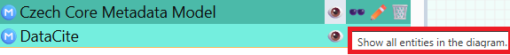
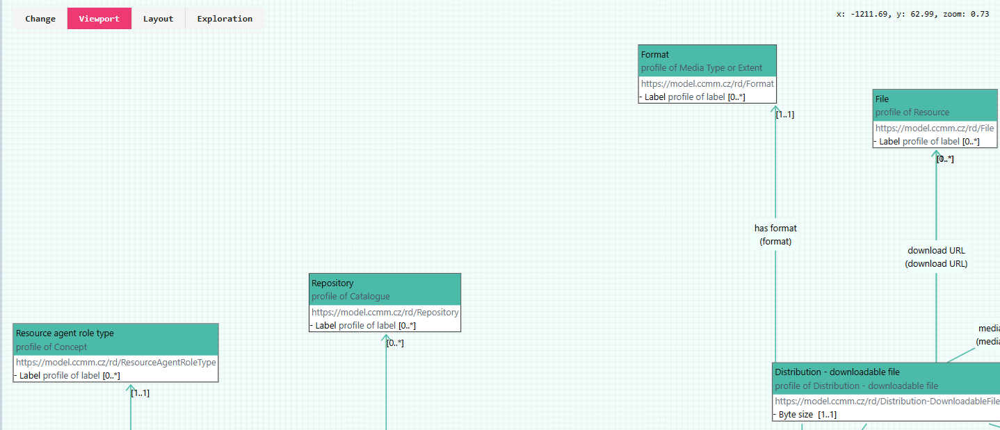
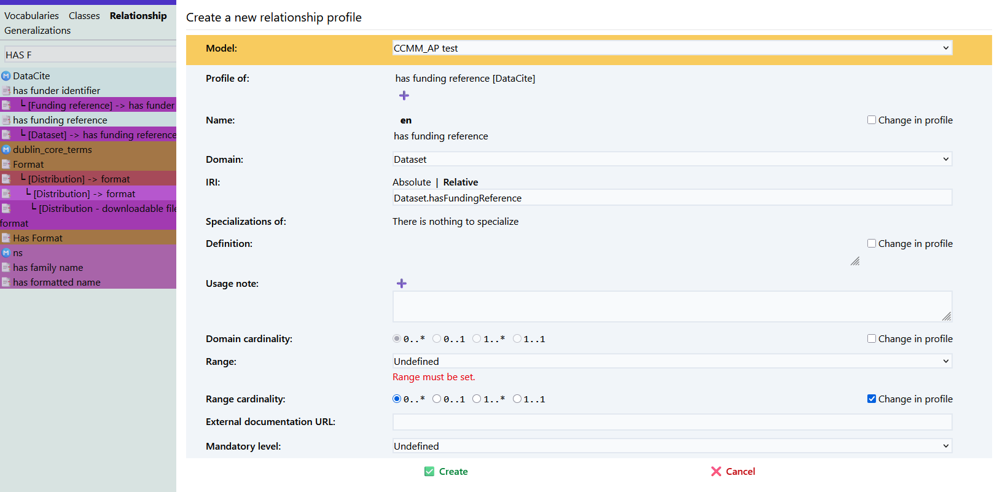

Application Profiles
An application profile (AP) in the field of metadata modeling is a set of rules and specifications that determine how existing metadata standards should be used in a specific context (in our case, metadata for a domain repository). Before we start creating the actual application profile for our repository in Dataspecer, it is necessary to become thoroughly familiar with the default metadata model. Czech Core Metadata Model (CCMM).
What to clarify before creating a metadata profile for a repository
-
Do we need our own application profile? If CCMM covers my needs, I don't need any other application profile.
-
What will we describe? Does the default metadata model (CCMM) and available vocabularies allow describing all necessary entities? Are there domain vocabularies that can be used for our repository? Are they available in a suitable format, i.e., RDF? If not, we need to define missing concepts in our own vocabulary, which will then be used in the new application profile.
-
We think about which elements from CCMM and other vocabularies or profiles we will adopt, and how we will use them in our profile. We set rules on how to use them. For example, whether they will be mandatory, with what cardinality, etc. We must not violate CCMM rules.
Vocabularies or application profiles that we want to use in Dataspecer must be hosted on a web server supporting Cross origin resource sharing (CORS) technique. If they are hosted on a server that does not support CORS technique, and it is not in our power to ensure support, we can copy the file to a web that supports CORS technique, e.g., GitHub Pages.
Creating a new application profile
In the main menu, choose "Project Guide" – Create application profile.


-
Enter project name (e.g., "CCMM AP for domain XY").
-
Insert specification URL of the model from which you want to create the application profile.
If you are creating an application profile for CCMM, insert a link to it:
https://techlib.github.io/CCMM/en/ -
Fill in Base IRI – basic IRI (Internationalized Resource Identifier),
under which elements of your profile will be identified:https://example.com/profile/myprofile/
Note: We recommend thinking ahead; however, it can be modified later. The profile tab contains all vocabularies used in the default metadata model. I can display what the selected vocabulary contains.
 
▶️ Selection of classes included in the application profile
After creating a new application profile, the application profile editor opens.
The profile tab contains all elements used in the default metadata model.
I choose an item that I want to add to my application profile (e.g., Agent).
Click on Create new profile (horseshoe symbol).
We decide whether we want to adopt the class as it is defined in the default metadata model, or we will modify it.
Name: Class naming.
IRI (International Resource Identifier) Class identifier.
Specialization: Whether it is a specialization of another class.
Definition: Brief description of the given class. Can also be stated in several languages.
Example: Agent: Any entity carrying out actions with respect to the entities Catalogue and the Catalogued Resources.*
Usage note: Note on the use of the given class. E.g., "In this profile, dataset is used for XYZ."
External documentation: Link to external documentation describing the given class.
Role: I determine whether the role will be main or supportive. Main roles are important elements of the metadata profile, e.g., dataset, catalog. Supportive includes less important ones, e.g., theme. Roles are not inherited between profiles.
On the left I see the catalog - classes in the application profile. Added ones are colored green. On the right is the visual model where I see

▶️ Adding attributes
For classes, it is then necessary to add attributes. 1. I add an attribute with the plus symbol.
- Define what you are based on Profile of and for which class you define the attribute Domain.

▶️ Adding relationships between classes
Now we add another class to our profile (funding reference). In the relationship section, I add a relationship between these classes (has funding reference).  1. I add an attribute with the plus symbol.
- Define what you are based on Profile of and for which class you define the attribute Domain Cardinality Determines how many times a certain relationship or property between two classes can or must be used. In other words, it describes the number of occurrences that are allowed or required between objects.
For example, if a dataset has a title property, cardinality 1..1 means it must have exactly one title. If the cardinality were 0..*, it could have zero, one, or more titles.
Cardinality is often written in the format:
0..1 – at most one occurrence (optional),
1..1 – exactly one occurrence (mandatory),
0..* – any number of occurrences (including zero),
1..* – at least one occurrence.